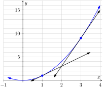
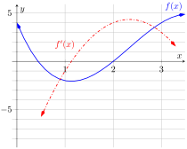
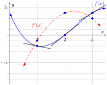
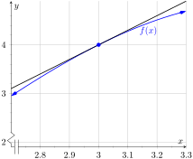
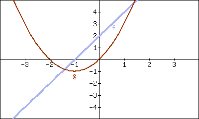
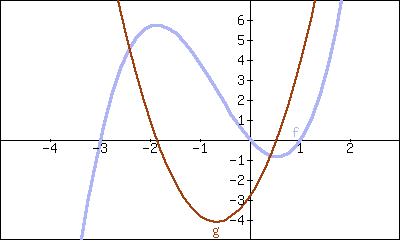
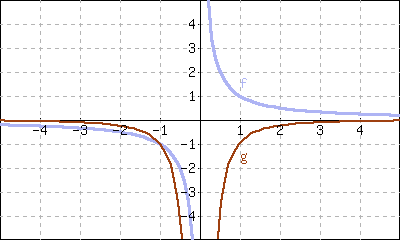
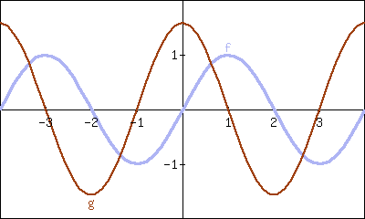

Section 2.1 defined the derivative of a function and gave examples of how to compute it using its definition (i.e., using limits). The section also started with a brief motivation for this definition, that is, finding the instantaneous velocity of a falling object given its position function. Section 2.3 will give us more accessible tools for computing the derivative; tools that are easier to use than repeated use of limits.
This section falls in between the “What is the definition of the derivative?” and “How do I compute the derivative?” sections. Here we are concerned with “What does the derivative mean?”, or perhaps, when read with the right emphasis, “What is the derivative?” We offer two interconnected interpretations of the derivative, hopefully explaining why we care about it and why it is worthy of study.
Subsection2.2.1Interpretation of the Derivative as Instantaneous Rate of Change
Section 2.1 started with an example of using the position of an object (in this case, a falling amusement park rider) to find the object's velocity. This type of example is often used when introducing the derivative because we tend to readily recognize that velocity is the instantaneous rate of change in position. In general, if \(f\) is a function of \(x\text{,}\) then \(\fp(x)\) measures the instantaneous rate of change of \(f\) with respect to \(x\text{.}\) Put another way, the derivative answers “When \(x\) changes, at what rate does \(f\) change?” Thinking back to the amusement park ride, we asked “When time changed, at what rate did the height change?” and found the answer to be “By \(-64\) feet per second.”
Now imagine driving a car and looking at the speedometer, which reads “60 mph.” Five minutes later, you wonder how far you have traveled. Certainly, lots of things could have happened in those \(5\) minutes; you could have intentionally sped up significantly, you might have come to a complete stop, you might have slowed to 20 mph as you passed through construction. But suppose that you know, as the driver, none of these things happened. You know you maintained a fairly consistent speed over those \(5\) minutes. What is a good approximation of the distance traveled?
One could argue the only good approximation, given the information provided, would be based on “\(\text{distance} = \text{rate}\times\text{time.}\)” In this case, we assume a constant rate of 60 mph with a time of \(5\) minutes or \(5/60\) of an hour. Hence we would approximate the distance traveled as \(5\) miles.
Referring back to the falling amusement park ride, knowing that at \(t=2\) the velocity was \(-64\) ft/s, we could reasonably approximate that \(1\) second later the riders' height would have dropped by about \(64\) feet. Knowing that the riders were accelerating as they fell would inform us that this is an under-approximation. If all we knew was that \(f(2) = 86\) and \(\fp(2) = -64\text{,}\) we'd know that we'd have to stop the riders quickly otherwise they would hit the ground.
In both of these cases, we are using the instantaneous rate of change to predict future values of the output.
Subsection2.2.2Units of the Derivative
It is useful to recognize the units of the derivative function. If \(y\) is a function of \(x\text{,}\) i.e., \(y=f(x)\) for some function \(f\text{,}\) and \(y\) is measured in feet and \(x\) in seconds, then the units of \(y' = \fp\) are “feet per second,” commonly written as “ft/s.” In general, if \(y\) is measured in units \(P\) and \(x\) is measured in units \(Q\text{,}\) then \(y'\) will be measured in units “\(P\) per \(Q\)”, or “\(P/Q\text{.}\)” Here we see the fraction-like behavior of the derivative in the notation: the units of \(\frac{dy}{dx}\)are \(\frac{\text{units of }y}{\text{units of }x}\text{.}\)
Example2.2.1.The meaning of the derivative: World Population.
Let \(P(t)\) represent the world population \(t\) minutes after 12:00 a.m., January 1, 2012. It is fairly accurate to say that \(P(0) = 7{,}028{,}734{,}178\) (www.prb.org). It is also fairly accurate to state that \(P'(0) = 156\text{;}\) that is, at midnight on January 1, 2012, the population of the world was growing by about 156 people per minute (note the units). Twenty days later (or \(28{,}800\) minutes later) we could reasonably assume the population grew by about \(28{,}800\cdot156 = 4{,}492{,}800\) people.
Example2.2.2.The meaning of the derivative: Manufacturing.
The term widget is an economic term for a generic unit of manufacturing output. Suppose a company produces widgets and knows that the market supports a price of \(\$10\) per widget. Let \(P(n)\) give the profit, in dollars, earned by manufacturing and selling \(n\) widgets. The company likely cannot make a (positive) profit making just one widget; the start-up costs will likely exceed \(\$10\text{.}\) Mathematically, we would write this as \(P(1) \lt 0\text{.}\)
What do \(P(1000) = 500\) and \(P'(1000)=0.25\) mean? Approximate \(P(1100)\text{.}\)
The equation \(P(1000)=500\) means that selling \(1000\) widgets returns a profit of \(\$500\text{.}\) We interpret \(P'(1000) = 0.25\) as meaning that when we are selling \(1000\) widgets, the profit is increasing at rate of \(\$0.25\) per widget (the units are “dollars per widget.”) Since we have no other information to use, our best approximation for \(P(1100)\) is:
We approximate that selling \(1100\) widgets returns a profit of \(\$525\text{.}\)
The previous examples made use of an important approximation tool that we first used in our previous “driving a car at 60 mph” example at the beginning of this section. Five minutes after looking at the speedometer, our best approximation for distance traveled assumed the rate of change was constant. In Examples 2.2.1 and Example 2.2.2 we made similar approximations. We were given rate of change information which we used to approximate total change. Notationally, we would say that
This approximation is best when \(h\) is “small.” “Small” is a relative term; when dealing with the world population, \(h=22\text{ days} = 28{,}800\text{ minutes}\) is small in comparison to years. When manufacturing widgets, \(100\) widgets is small when one plans to manufacture thousands.
Subsection2.2.3The Derivative and Motion
One of the most fundamental applications of the derivative is the study of motion. Let \(s(t)\) be a position function, where \(t\) is time and \(s(t)\) is distance. For instance, \(s\) could measure the height of a projectile or the distance an object has traveled.
Let \(s(t)\) measure the distance traveled, in feet, of an object after \(t\) seconds of travel. Then \(s'(t)\) has units “feet per second,” and \(s'(t)\) measures the instantaneous rate of distance change with respect to time — it measures velocity.
Now consider \(v(t)\text{,}\) a velocity function. That is, at time \(t\text{,}\)\(v(t)\) gives the velocity of an object. The derivative of \(v\text{,}\)\(v'(t)\text{,}\) gives the instantaneous rate of velocity change with respect to time — acceleration. (We often think of acceleration in terms of cars: a car may “go from \(0\) to \(60\) in \(4.8\) seconds.” This is an average acceleration, a measurement of how quickly the velocity changed.) If velocity is measured in feet per second, and time is measured in seconds, then the units of acceleration (i.e., the units of \(v'(t)\)) are “feet per second per second,” or \((\)ft/s\()\)/s. We often shorten this to “feet per second squared,” or ft⁄s2, but this tends to obscure the meaning of the units.
Perhaps the most well known acceleration is that of gravity. In this text, we use \(g=32\,\text{ft}/\text{s}^2\) or \(g=9.8\,\text{m}/\text{s}^2\text{.}\) What do these numbers mean?
A constant acceleration of \(32\,\frac{\text{ft}/\text{s}}{\text{s}}\) means that the velocity changes by \(32\,\text{ft}/\text{s}\) each second. For instance, let \(v(t)\) measure the velocity of a ball thrown straight up into the air, where \(v\) has units ft/s and \(t\) is measured in seconds. The ball will have a positive velocity while traveling upwards and a negative velocity while falling down. The acceleration is thus \(-32\,\text{ft}/\text{s}^2\text{.}\) If \(v(1) = 20\,\text{ft}/\text{s}\text{,}\) then \(1\) second later, the velocity will have decreased by \(32\,\text{ft}/\text{s}\text{;}\) that is, \(v(2) = -12\,\text{ft/s}\text{.}\) We can continue: \(v(3) = -44\,\text{ft/s}\text{.}\) Working backward, we can also figure that \(v(0) = 52\,\text{ft}/\text{s}\text{.}\)
These ideas are so important we write them out as a Key Idea.
Key Idea2.2.3.The Derivative and Motion.
Let \(s(t)\) be the position function of an object. Then \(s'(t)=v(t)\) is the velocity function of the object.
Let \(v(t)\) be the velocity function of an object. Then \(v'(t)=a(t)\) is the acceleration function of the object.
Subsection2.2.4Interpretation of the Derivative as the Slope of the Tangent Line
We now consider the second interpretation of the derivative given in this section. This interpretation is not independent from the first by any means; many of the same concepts will be stressed, just from a slightly different perspective.
Given a function \(y=f(x)\text{,}\) the difference quotient \(\frac{f(c+h)-f(c)}{h}\) gives a change in \(y\) values divided by a change in \(x\) values; i.e., it is a measure of the “rise over run,” or “slope,” of the secant line that goes through two points on the graph of \(f\text{:}\)\((c, f(c))\) and \((c+h,f(c+h))\text{.}\) As \(h\) shrinks to \(0\text{,}\) these two points come close together; in the limit we find \(\fp(c)\text{,}\) the slope of a special line called the tangent line that intersects \(f\) only once near \(x=c\text{.}\)
Lines have a constant rate of change, their slope. Nonlinear functions do not have a constant rate of change, but we can measure their instantaneous rate of change at a given \(x\) value \(c\) by computing \(\fp(c)\text{.}\) We can get an idea of how \(f\) is behaving by looking at the slopes of its tangent lines. We explore this idea in the following example.
Example2.2.4.Understanding the derivative: the rate of change.
Consider \(f(x) = x^2\) as shown in Figure 2.2.5. It is clear that at \(x=3\) the function is growing faster than at \(x=1\text{,}\) as it is steeper at \(x=3\text{.}\) How much faster is it growing at \(3\) compared to \(1\text{?}\)
We can answer this exactly (and quickly) after Section 2.3, where we learn to quickly compute derivatives. For now, we will answer graphically, by considering the slopes of the respective tangent lines.

Figure2.2.6.A graph of \(f(x)=x^2\) and tangent lines at \(x=1\) and \(x=3\)
With practice, one can fairly effectively sketch tangent lines to a curve at a particular point. In Figure 2.2.6, we have sketched the tangent lines to \(f\) at \(x=1\) and \(x=3\text{,}\) along with a grid to help us measure the slopes of these lines. At \(x=1\text{,}\) the slope is \(2\text{;}\) at \(x=3\text{,}\) the slope is \(6\text{.}\) Thus we can say not only is \(f\) growing faster at \(x=3\) than at \(x=1\text{,}\) it is growing three times as fast.
Example2.2.7.Understanding the graph of the derivative.
Consider the graph of \(f(x)\) and its derivative, \(\fp(x)\text{,}\) in Figure 2.2.8. Use these graphs to find the slopes of the tangent lines to the graph of \(f\) at \(x=1\text{,}\)\(x=2\text{,}\) and \(x=3\text{.}\)

Figure2.2.8.Graphs of \(f\) and \(\fp\) in Example 2.2.7
To find the appropriate slopes of tangent lines to the graph of \(f\text{,}\) we need to look at the corresponding values of \(\fp\text{.}\)
The slope of the tangent line to \(f\) at \(x=1\) is \(\fp(1)\text{;}\) this looks to be about \(-1\text{.}\)
The slope of the tangent line to \(f\) at \(x=2\) is \(\fp(2)\text{;}\) this looks to be about \(4\text{.}\)
The slope of the tangent line to \(f\) at \(x=3\) is \(\fp(3)\text{;}\) this looks to be about \(3\text{.}\)
Using these slopes, tangent line segments to \(f\) are sketched in Figure 2.2.9. Included on the graph of \(\fp\) in this figure are points where \(x=1\text{,}\)\(x=2\) and \(x=3\) to help better visualize the \(y\) value of \(\fp\) at those points.

Figure2.2.9.Graphs of \(f\) and \(\fp\) in Example 2.2.7
Example2.2.10.Approximation with the derivative.
Consider again the graph of \(f(x)\) and its derivative \(\fp(x)\) in Example 2.2.7. Use the tangent line to \(f\) at \(x=3\) to approximate the value of \(f(3.1)\text{.}\)
Figure 2.2.11 shows the graph of \(f\) along with its tangent line, zoomed in at \(x=3\text{.}\) Notice that near \(x=3\text{,}\) the tangent line makes an excellent approximation of \(f\text{.}\) Since lines are easy to deal with, often it works well to approximate a function with its tangent line. (This is especially true when you don't actually know much about the function at hand, as we don't in this example.)

Figure2.2.11.Zooming in on \(f\) and its tangent line at \(x=3\) for the function given in Examples 2.2.7 and Example 2.2.10
While the tangent line to \(f\) was drawn in Example 2.2.7, it was not explicitly computed. Recall that the tangent line to \(f\) at \(x=c\) is \(y = \fp(c)(x-c)+f(c)\text{.}\) While \(f\) is not explicitly given, by the graph it looks like \(f(3) = 4\text{.}\) Recalling that \(\fp(3) = 3\text{,}\) we can compute the tangent line to be approximately \(y = 3(x-3)+4\text{.}\) It is often useful to leave the tangent line in point-slope form.
To use the tangent line to approximate \(f(3.1)\text{,}\) we simply evaluate \(y\) at \(3.1\) instead of \(f\text{.}\)
To demonstrate the accuracy of the tangent line approximation, we now state that in Example 2.2.10, \(f(x) = -x^3+7x^2-12x+4\text{.}\) We can evaluate \(f(3.1) = 4.279\text{.}\) Had we known \(f\) all along, certainly we could have just made this computation. In reality, we often only know two things:
what \(f(c)\) is, for some value of \(c\text{,}\) and
what \(\fp(c)\) is.
For instance, we can easily observe the location of an object and its instantaneous velocity at a particular point in time. We do not have a “function \(f\)” for the location, just an observation. This is enough to create an approximating function for \(f\text{.}\)
This last example has a direct connection to our approximation method explained above after Example 2.2.2. We stated there that
If we know \(f(c)\) and \(\fp(c)\) for some value \(x=c\text{,}\) then computing the tangent line at \((c,f(c))\) is easy: \(y(x) = \fp(c)(x-c)+f(c)\text{.}\) In Example 2.2.10, we used the tangent line to approximate a value of \(f\text{.}\) Let's use the tangent line at \(x=c\) to approximate a value of \(f\) near \(x=c\text{;}\) i.e., compute \(y(c+h)\) to approximate \(f(c+h)\text{,}\) assuming again that \(h\) is “small.” Note:
This is the exact same approximation method used above! Not only does it make intuitive sense, as explained above, it makes analytical sense, as this approximation method is simply using a tangent line to approximate a function's value.
The importance of understanding the derivative cannot be understated. When \(f\) is a function of \(x\text{,}\)\(\fp(x)\) measures the instantaneous rate of change of \(f\) with respect to \(x\) and gives the slope of the tangent line to \(f\) at \(x\text{.}\)
Exercises2.2.5Exercises
Terms and Concepts
1.
What is the instantaneous rate of change of position called?
2.
Given a function \(y=f(x)\text{,}\) in your own words describe how to find the units of \(\fp(x)\text{.}\)
3.
What functions have a constant rate of change?
Problems
4.
Given \(f(2)=12\) and \(\fp(2) = -1\text{,}\) approximate \(f(3)\text{.}\)
5.
Given \(P(70)=68\) and \(P'(70) = 6\text{,}\) approximate \(P(75)\text{.}\)
6.
Given \(z(40)=150\) and \(z'(40) = -11\text{,}\) approximate \(z(25)\text{.}\)
7.
Knowing \(f(10)=25\) and \(\fp(10) = 5\) and the methods described in this section, which approximation is likely to be most accurate?
f(10.1)
f(11)
f(20)
Explain your reasoning.
8.
Given \(f(6)=82\) and \(f(7) = 73\text{,}\) approximate \(\fp(6)\text{.}\)
9.
Given \(H(2)=51\) and \(H(8) = 99\text{,}\) approximate \(H'(2)\text{.}\)
10.
Let \(V(x)\) measure the volume, in decibels, measured inside a restaurant with \(x\) customers. What are the units of \(V'(x)\text{?}\)
11.
Let \(v(t)\) measure the velocity, in ft/s, of a car moving in a straight line \(t\) seconds after starting. What are the units of \(v'(t)\text{?}\)
12.
The height \(H\text{,}\) in feet, of a river is recorded \(t\) hours after midnight, April 1. What are the units of \(H'(t)\text{?}\)
13.
\(P\) is the profit, in thousands of dollars, of producing and selling \(c\) cars.
What are the units of \(P'(c)\text{?}\)
What is likely true of \(P(0)\text{?}\)
14.
\(T\) is the temperature in degrees Fahrenheit, \(h\) hours after midnight on July 4 in Sidney, NE.
What are the units of \(T'(h)\text{?}\)
Is \(T'(8)\) likely greater than or less than 0? Why?
Is \(T(8)\) likely greater than or less than 0? Why?
Exercise Group.
Graphs of functions \(f\) and \(g\) are given. Identify which function is the derivative of the other.
15.

\(f\) is the derivative of \(g\text{.}\)
\(g\) is the derivative of \(f\text{.}\)
16.

\(f\) is the derivative of \(g\text{.}\)
\(g\) is the derivative of \(f\text{.}\)
17.

\(f\) is the derivative of \(g\text{.}\)
\(g\) is the derivative of \(f\text{.}\)
18.

\(f\) is the derivative of \(g\text{.}\)
\(g\) is the derivative of \(f\text{.}\)
Review
Exercise Group.
Use the definition of the derivative to compute the derivative of \(f\text{.}\)
19.
\(f(x)=5x^2\)
Show your work using the definition of the derivative.
20.
\(f(x)=(x-2)^3\)
Show your work using the definition of the derivative.